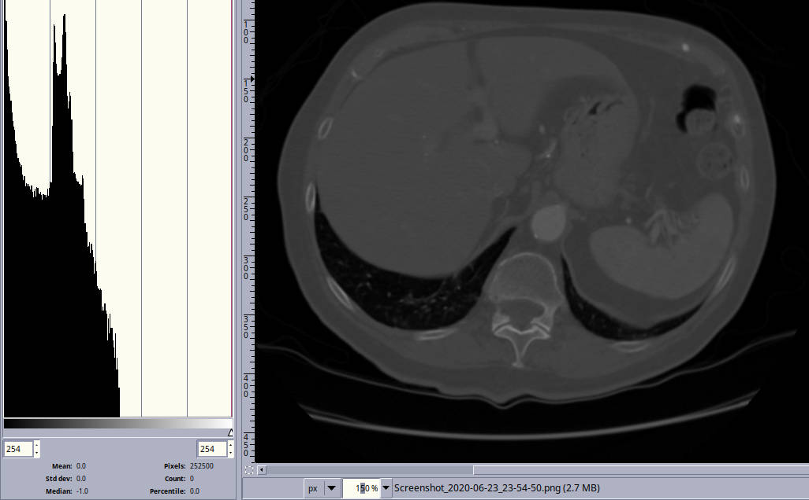
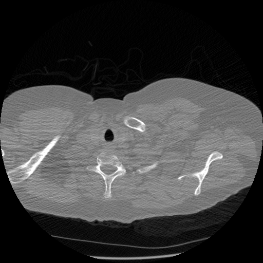
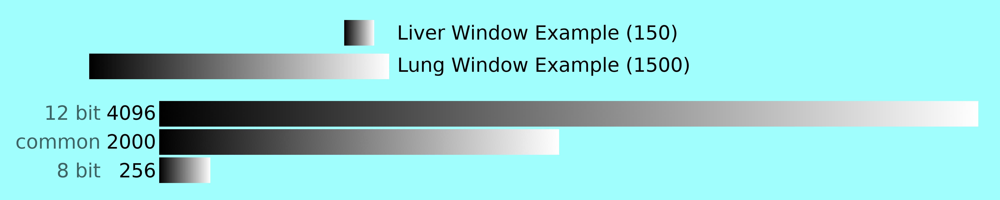
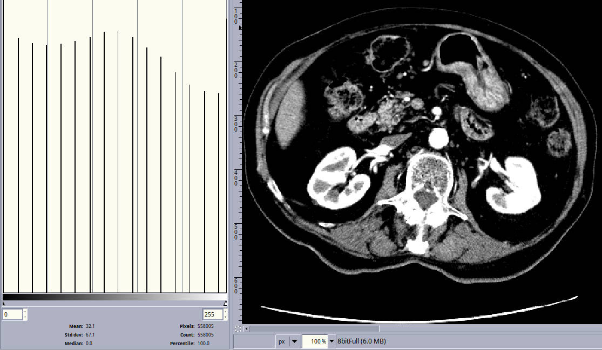
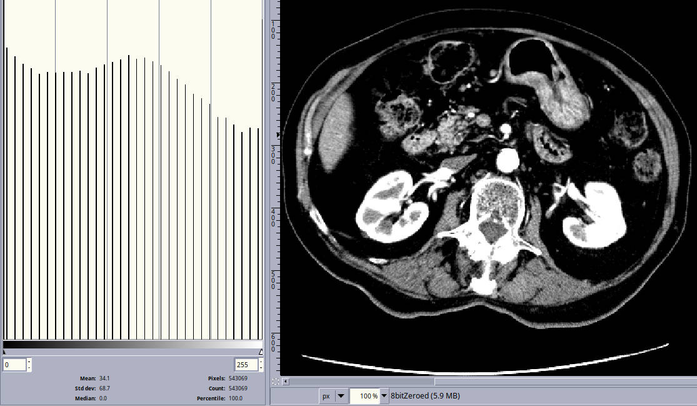
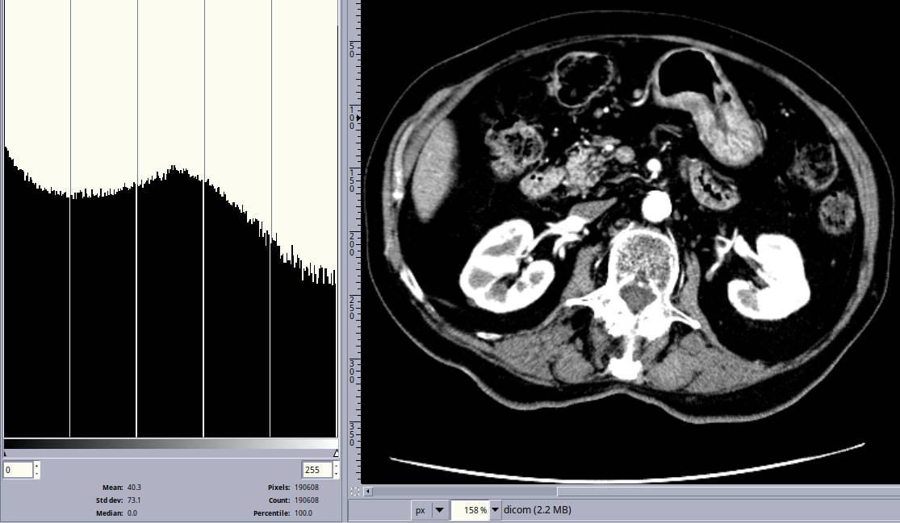
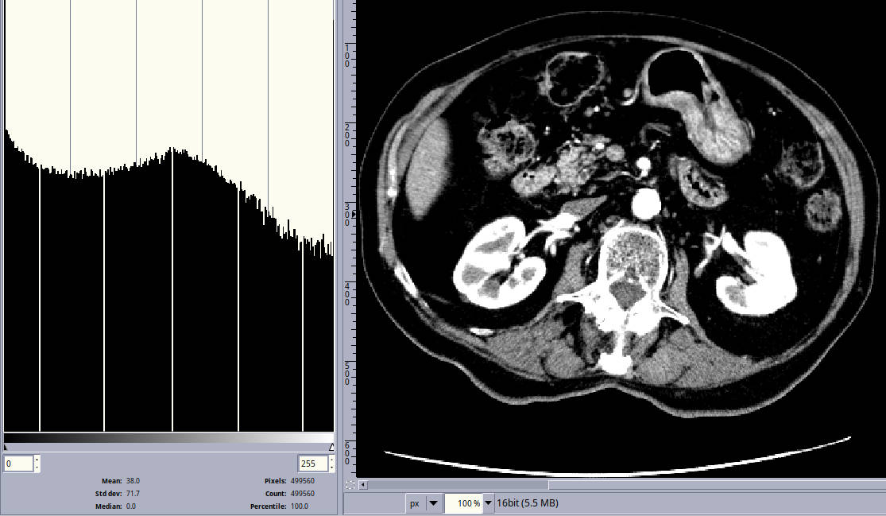

A text editor you like, preferably with syntax highlighting for JavaScript and PHP (The one used in the example)
(as of June 2020)
Common Shader Control
Logging
viewerResetShaderLog(): Clear the shader log but not the shaders themselves. Shaders can be removed with viewerRemoveShader(name)
viewerGetShaderLog( separater1, separater2 ): Get a string containing all of the shader changes for the entire viewer (shaders are not
constrained to a particular image). The components of every shader change are separated by separater1, and every shader change
is separated by separater2.
Every shader change will start with a flag indicating the change type
There are 6 main shader change types
i: Invoke - this message will have 2 extra components, the name of the shader invoked (might be off, of shaders are turned off),
and the time that shader was invoked.
r: Remove - this message will have 2 extra components, the name of the shader removed, and the time that it was removed.
m: Message - this message will have 2 extra components, the message itself, and the time it was logged.
g: Gray Window Creation - this message will have 4 extra components, the name of the newly created shader, the level, width,
and time it was created.
v: Value Window Creation - this message will have 4 extra components, the name of the newly created shader, the level, width,
and time it was created.
c: Custom Shader Creation - this message will have 4 extra components, the name of the newly created shader, the vertex shader,
fragment shader, and time it was created.
There are other advanced shader change types (which almost no one will enounter)
G: Full 12 bit (scaled to 8 bit) gray window shader creation
V: Full 12 bit (scaled to 8 bit) value window shader creation
h: High 16 bit (unscaled) gray window shader creation
Logging Tips:
Creation of custom shaders log the entire shader code, it is recommended to not log these events, and log a message stating the shader's creation instead.
This will require less data to be passed back to the server and make your logs cleaner.
Custom shaders are made of code with contain commas, semi-colons, and new lines. Because these would be common choices for separators, you will have
to become more creative. Remember that separators can be many characters long: viewerGetShaderLog('2222222','5555555555') is perfectly legal.
Not the most legable, but if you're autoparsing and need to return custom shaders in your log, you probably already gave up on legablity.

This image had a window width encompassing the full 12 bit dicom, notice how the upper values are mostly unused.
Shader Creation
Notes:
The following functions all have the optional parameter log, if this is false, the change will not be logged, otherwise
shader changes are logged by default.
If you create an image windowed from -1000HU to 1000HU as recommended, any window with a high value over 1000 will not be accurate
because values > 1000 are now = 1000. Normally this missing data will go unnoticed, but you should be aware of this.
If a shader is added with the same name as a previous shader, the previous shader is overwritten. If that shader was currently
active, the new shader will become active.
Custom Shader Creation:
Custom shaders are written in the WebGL varient of glsl
When referring to the pixel components in glsl, the values range from 0 to 1, not 0 to 255
viewerAddCustomShader( name, vertexShader, fragmentShader, optional log ): Add a shader named name with the shader components defined
as strings. You can set the vertexShader to d if you want to use a simple default vertex shader. However you always have to
specify the fragmentShader. 1
8 bit Zeroed Window Shader Creation (Recommended for CT images):
It is strongly recommended that, for windowing purposes, you use only these zeroed shaders.
These shaders expect source images rendered at 8 bits per color with level at 0HU and width at 2000HU
As seen in the image above, humans are quite squishy, even Vin Diesel. Almost all values in our bodies are in the lower half of
what is available in a typical dicom image (less than 1048HU).
If you don't know your bits per color, but are outputing dicoms to png or jpg, it's safe to assume they are 8 bit.
viewerAddWindowingShaderGray( name, level, width, optional log ): Create a windowing shader named name with the specified
window level and width. This creates a grayscale shader which expects every pixel to have
red = green = blue. If this is not the case, use value shading below (obviously you don't have to check every pixel, it won't break anything if this is
off a little, CT images are grayscale).*1
viewerAddWindowingShaderValue( name, level, width, optional log ): Create a windowing shader named name with the specified
window level and width. This converts the pixel values to HSV, and only windows the Value component.
This is better for non grayscale images.*1
8 bit Full Depth Window Width Shader Creation:
These shaders expect source images rendered with level at 1048HU and width at 4096HU (full 12 bit range)
Dicoms tend to store data in 12 or 16 bits. This shader works with that range, but reduces
the depth to 8 bits (so data is lost, but these images still work like regular images).
Normally human bodies don't need to show any variety above 1000HU so it is generally advised
to prepare your source images to work with the zeroed shaders above.
Because the usual contrast is roughly halved, the pixel values are expanded in these shaders to match
the HU conversions for the zeroed shader.
If you don't know your bits per color, but are outputing dicoms to png or jpg, it's safe to assume they are 8 bit.
viewerAddWindowingShaderGrayFull( name, level, width, optional log ): Create a windowing shader named name with the specified
window level and width. This creates a grayscale shader which expects every pixel to have
red = green = blue. If this is not the case, use value shading below (obviously you don't have to check every pixel, it won't break anything if this is
off a little, CT images are grayscale).*1
viewerAddWindowingShaderValueFull( name, level, width, optional log ): Create a windowing shader named name with the specified
window level and width. This converts the pixel values to HSV, and only windows the Value component
this is better for non grayscale images.*1
16 bit Full Depth Color Window Shader Creation:
Never use this shader unless you know exactly why you need it
I am only including it as a means to test contrast correctness for different windowing levels.
If your trials need higher color depth, either use several files with their own prerendered window, or use a CPU based viewer (not this one).
If you don't know whether or not you need higher color depth, you don't.
This shader expects images rendered as pngs with the highest 8 bits stored in the red component, and the lowest
8 bits stored in the green.
This shader combines 8 bits from the red and green components at runtime to show a 16 bit grayscale image.
Because this contrast is 16 times higher, the pixel values are reduced in this shader to match
the HU conversions of the 8 bit shaders
viewerAddWindowingShaderGray16( name, level, width, optional log ): Create a windowing shader named name with the specified
window level and width. This creates a grayscale shader which expects the red pixel to equal high bits, and green pixels to equal low bits
(blue is ignored).*1
Shader Control:
viewerRemoveShader( name, optional log ): Delete the shader with name name,
if this is the active shader, no shader will be applied.1
viewerSetShader( name, optional log ): Activte the shader with the name name.
Call viewerSetShader( "off" ); to make no shader active. 1
*Windowing levels and widths are specified in decimal values which linearly progress from 0 (black) to 1 (white). However you will likely encounter
Hounsfield Units (HU). These specify density, not color. Our bodies typically range from -1000 HU (air) to
1000-ish HU (bone).
Some values will be above 1 and below 0. This is not an error (and is desired, it just means portions of the spectrum are discarded)
HUs do go above 1000, Dicoms tend to retain this extra range, but most windows discard it. These high values are very dense, yet we are
quite squishy.
Grainyness is common, but as the window width decreases, color difference increases, and the JPEG's compression defects will show.
1 Returns true if the operation was successful, false if failed.
Advanced Windowing
For easy transmission of images over the Internet as well as a uniformly smooth runtime experience, this viewer requires images which have 8 bits per color.
Dicoms, on the other hand, often store 12 bits per color allowing them to show a much greater change in contrast. Because these
images are grayscale, where all colors are equal, we can store half of the bits in one color, and half
in another. The supplied way of doing this for the viewer is to store the top half of the bits as red, and
the bottom half as green (blue is unused).
Unfortunately, this means the images will have to be stored losslessly (as a png), and will be harder
to compress generally (about twice the size of a normal, grayscale, png). Because of this, it is recommended that
high bit depths are only used for internal testing, and never in practice.
If you do need a higher bit depth, it is recommended that you use a viewer designed for that,
spread your windows across multiple images, or
possibly make your own glsl shader which works better with jpeg's compression.
The 8 bit windowing shaders which come with the viewer expect the source image to be rendered with a window preapplied.
This can either be from -1000 to 1000, or from -1000 to 3095.
However there if you need to render your source images with a different window this is fine. The Zeroed window shaders
can handle this, but you do have to offset your values to mimmic HU.
Determine what window the image is rendered in.
Determine what window you want to apply in the viewer.
These are roughly the steps to go through to make high bit images to work in the the included
16 bit shader. This is loose guidance only, it is expected that if you go this route, you have your own means of
creating high bit depth images, so some of these steps will differ from your own.
A text editor you like, preferably with syntax highlighting for bash and python (The one used in the example)
A means of converting dicoms into the correct sequence of images. The software used in the example:
Linux/Bash - calls the converter on each image, and turns the meta data into a useful, ordered, file name
XMedCon - reads image metadata to get spatial location for ordering and converts dicom to ascii
Python - simple script to read values stored in ascii file and turn them into an image
Image Magick - to turn the final pngs into a grid of images
Gimp - Not needed in the example, but sometimes nice for error correction
My Scripts - Output dicoms to ascii files and then to various png formats
The Lost Information
These two images both use a window where level is 0 and width is 2000. Which one is correct?

I'm pretty sure it's the second one. Dicoms typically store 24 values that are less dense then air.
I think that means the proper way to render them is by making all of these values black.
So the "full" window expects these values to blend together (even in the "lossless" 16 bit
version). If you want to keep this data around, you can either set your window to start 24 values below
air or ignore the interceptvalue in the dicom file, but this will result in a slightly brighter image (the first one).

As mentioned in the advanced windowing section, the ct viewer stores its data in common image formats.
So the available data in the 4096 value (dicom) format is heavily reduced to fit in only 256 values (png/jpg).
In any experiments without windoing, this isn't really an issue. The dicom is often shown in only 256 shades
of gray because of the monitor and/or graphics card.
When a window is applied in a normal dicom viewer, there is usually plenty of range in values to fill the available
256. It is often safe to say that the value range used in an window are the smaller of either the window width, and the color
depth of your monitor (usually 256). Two examples where 256 values aren't achieved: the liver window above is too narrow to show 256 values,
and the lung window,
which is huge and easily encompasses 256 available values, has to have a lower color depth because it stretches below the available data
(this is why lung windows don't show pure blacks).
Notice that the 2000 wide window I suggest doesn't cover the entire range of a dicom image. This means any windows
which go over 1000 HU will not be correct (I doubt anyone will notice though). This is mostly the Bone and
Full Dynamic Windows. In these cases the values under 1000 will be the expected shade, however some values at 1000 will be
dimmer than in a dicom viewer, and there will be no pure whites (while Full Dynamic is supposed to guarentee pure
whites). This is because the 2000 wide window drops everything above 1000 to 1000. So if the bone window topped out
at 1300, there will no longer be any values which meet this threshold.




All of these images have the same abdomen window applied. Going Clockwise from top left:
Full 4096 wide 8 bit png, Zeroed 2000 wide 8 bit png, Full 16 bit png, Original dicom rendered
with Amide (Not displayed in this online ct viewer.
Notice the holes in the histogram in the bottom 2 images. We used a window that was 250 HU wide,
so 5 values are missing (the last image has the missing values lining up really well with GIMP's unit
markings).
A few things to note:
The missing values in my 16 bit image aren't the same as the values in the real dicom viewer (and the
histograms are slightly different for what would be expected in a "lossless" conversion).
I think this is due to a scaling factor I apply to keep all my window values consistant,
this makes numbers round off slightly differently. Otherwise, I think the data is the same (but
unfortunately can't say for sure).
The images all look incredibly similar despite ranging from 17 to 251 values.
I was surprised by this too, maybe marketing departments are lying to us when it
comes to needing higher color definition :)
Really the biggest constraint when it comes to the narrowness of your window is how
heavily you apply jpg's compression. This should definitly be varried according to
what window widths you offer.
Some of the images are slightly brighter even though the window is the same.
This depends on the width of the holes in the histogram.
If a hole is wide, there is a larger range a window's level can be moved
without the window changing.
This means a window can be at the edge of this range which
will cause it to be brighter or darker.
Generally, this will never be noticed because the brightness of images
varies wildly.
If you take a closer look at any of these images, please be aware of the zoom level of the straight dicom
image. It was rendered smaller, so I had to scale it up slightly to match the others in GIMP which
gives it a hint of antialiasing.